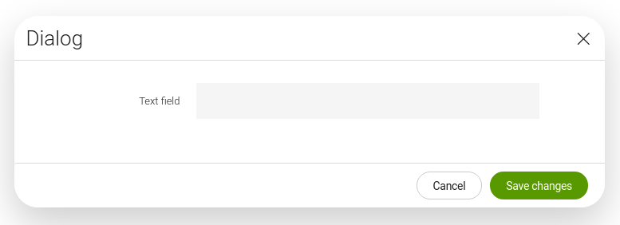
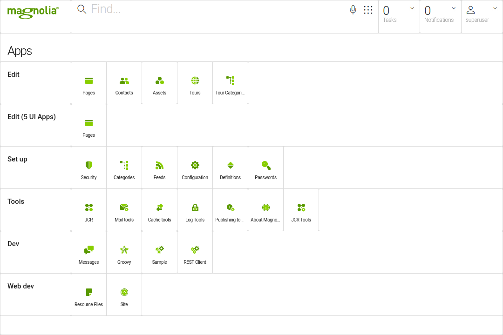

Upgrading to Magnolia 6.2.x
Related topics:
This page contains information you should be aware of when upgrading to Magnolia 6.2.x from any previous and currently supported version. Before starting the upgrade process, we recommend you read:
-
Release notes for the version you are updating to as well as for all intermediate versions.
If you are migrating from a Magnolia release which has already reached end of life, please contact us for migration support.
What to update
Click to see the list of all updated and new modules released with Magnolia 6.2.
-
Advanced Cache 2.3
-
Backup 2.4
-
Barebones Tomcat Bundle 1.2
-
Blossom 3.3.1
-
Cache 5.9.0
-
Campaign Publisher 1.3.2
-
Categorization 2.7.1
-
Community Edition 6.2
-
Contacts App 1.8
-
Content Dependencies 2.0
-
Content Editor 1.3.3
-
Content Tags 2.0
-
Content Translation Support 2.4.2
-
Content Types 1.1.1
-
DAM 3.0
-
Definitions App 2.1
-
Demo Projects 1.5
-
Diff 2.2
-
DX Core 6.2
-
External Forms 1.5.1
-
Freemarker Templating Samples 6.0.2
-
Groovy 3.0
-
Icons 22
-
Language Bundles 1.1
-
Machine Learning 1.2
-
Magnolia 6.2
-
Mail 5.5.3
-
Marketing Tags Manager 1.4.3
-
Multisite 2.1
-
Observation 2.2
-
Pages 6.2
-
Password Manager 1.2.3
-
Periscope 1.2
-
Personalization 2.0
-
Privacy 2.0
-
Public User Registration 2.7.3
-
Publishing 1.2
-
Publishing Transactional 1.0.5
-
Resources 3.0
-
REST Client 2.0
-
REST Client UI 1.0
-
REST Framework 2.2
-
RSS Aggregator 2.6.3
-
Scheduler 2.3.3
-
Site 1.2.4
-
SiteMesh 1.2
-
Soft Locking 3.0
-
Task Management 1.2.7
-
Third-party library BOM 6.2
-
UI 6.2
-
Usage Metrics 1.1
-
Vaadin Compatibility Addons 1.3.3
-
Workflow 6.0
Check the magnolia.properties file
When upgrading Magnolia, it is always worth comparing your
magnolia.properties file with the one from the newly released Magnolia
bundles. Below are the latest versions of the magnolia.properties
files for Magnolia 6.2.
Magnolia CE
ce/magnolia-empty-webapp/src/main/webapp/WEB-INF/config/default/magnolia.properties
#--------------------------------------------
# Here we define some properties not
# configured in the config repository.
# They are used in common before the initialization
# of the repositories.
#
# WARNING: on Windows systems, either use the /
# to separate path elements, or escape the \ with
# another \, i.e C:\\magnolia\\data\\repositories
# or c:/magnolia/data/repositories
#--------------------------------------------
magnolia.home=${magnolia.app.rootdir}
# The directory to expose file system resources from
magnolia.resources.dir=${magnolia.home}/modules
# Pattern to define which resources should be observed by ClasspathScanner
magnolia.resources.classpath.observation.pattern=.*\\.(ftl|yaml)$
# Directories relative to magnolia.resources.dir which will be excluded from FileResourceOrigin observation.
# Also see info.magnolia.resourceloader.file.FileSystemResourceOrigin#EXCLUDED_DIRECTORIES
#magnolia.resources.filesystem.observation.excludedDirectories=META-INF,WEB-INF,cache,docroot,logs,repositories,tmp
magnolia.cache.startdir=${magnolia.home}/cache
magnolia.upload.tmpdir=${magnolia.home}/tmp
magnolia.exchange.history=${magnolia.home}/history
magnolia.repositories.config=WEB-INF/config/default/repositories.xml
magnolia.repositories.home=${magnolia.home}/repositories
magnolia.repositories.jackrabbit.config=WEB-INF/config/repo-conf/jackrabbit-bundle-h2-search.xml
log4j.config=WEB-INF/config/default/log4j2.xml
magnolia.logs.dir=${magnolia.home}/logs
# The directories in which the bootstrap files are searched
magnolia.bootstrap.dir=WEB-INF/bootstrap/author WEB-INF/bootstrap/common
# This is only used for the initial installation afterward the configuration in the config repository is used
# The value is saved in /server/admin
magnolia.bootstrap.authorInstance=true
# Some modules contain optional sample content. They will check this property to decide if they should install
# the sample data
magnolia.bootstrap.samples=true
# Activate UTF-8 support to pages
magnolia.utf8.enabled=false
# Switch to false to enhance the performance of the javascript generation and similar
magnolia.develop=false
# Change to point at your custom Vaadin widgetset and theme
# Your widgetset should always inherit magnolia’s default widgetset (info.magnolia.widgetset.MagnoliaWidgetSet)
# Your theme should always include magnolia’s default theme (admincentral)
magnolia.ui.vaadin.widgetset=info.magnolia.widgetset.MagnoliaWidgetSet
magnolia.ui.vaadin.theme=admincentral
# Contact details displayed in the footer of the login form
#magnolia.service.contact=
#--------------------------------------------
# Repository connection
#--------------------------------------------
magnolia.connection.jcr.userId = admin
magnolia.connection.jcr.password = admin
# Set it to true if bootstrapping/update should be performed automatically
magnolia.update.auto=false
# Location of the file containing both the private and the public keys used to verify authenticity of activation requests
# This file is generated if not present
magnolia.author.key.location=${magnolia.home}/WEB-INF/config/default/magnolia-activation-keypair.properties
Magnolia DX Core
dx-core/magnolia-dx-core-webapp/src/main/webapp/WEB-INF/config/default/magnolia.properties
#--------------------------------------------
# Here we define some properties not
# configured in the config repository.
# They are used in common before the initialization
# of the repositories.
#
# WARNING: on Windows systems, either use the /
# to separate path elements, or escape the \ with
# another \, i.e C:\\magnolia\\data\\repositories
# or c:/magnolia/data/repositories
#--------------------------------------------
magnolia.home=${magnolia.app.rootdir}
# The directory to expose file system resources from
magnolia.resources.dir=${magnolia.home}/modules
# Pattern to define which resources should be observed by ClasspathScanner
magnolia.resources.classpath.observation.pattern=.*\\.(ftl|yaml)$
# Directories relative to magnolia.resources.dir which will be excluded from FileResourceOrigin observation.
# Also see info.magnolia.resourceloader.file.FileSystemResourceOrigin#EXCLUDED_DIRECTORIES
#magnolia.resources.filesystem.observation.excludedDirectories=META-INF,WEB-INF,cache,docroot,logs,repositories,tmp
magnolia.cache.startdir=${magnolia.home}/cache
magnolia.upload.tmpdir=${magnolia.home}/tmp
magnolia.exchange.history=${magnolia.home}/history
magnolia.repositories.config=WEB-INF/config/default/repositories.xml
magnolia.repositories.home=${magnolia.home}/repositories
magnolia.repositories.jackrabbit.config=WEB-INF/config/repo-conf/jackrabbit-bundle-h2-search.xml
log4j.config=WEB-INF/config/default/log4j2.xml
magnolia.logs.dir=${magnolia.home}/logs
# The directories in which the bootstrap files are searched
magnolia.bootstrap.dir=WEB-INF/bootstrap/author WEB-INF/bootstrap/common
# This is only used for the initial installation afterward the configuration in the config repository is used
# The value is saved in /server/admin
magnolia.bootstrap.authorInstance=true
# Some modules contain optional sample content. They will check this property to decide if they should install
# the sample data
magnolia.bootstrap.samples=true
# Activate UTF-8 support to pages
magnolia.utf8.enabled=false
# Switch to false to enhance the performance of the javascript generation and similar
magnolia.develop=false
# Change to point at your custom Vaadin widgetset and theme
# Your widgetset should always inherit magnolia’s Pro widgetset (info.magnolia.widgetset.MagnoliaProWidgetSet)
magnolia.ui.vaadin.widgetset=info.magnolia.widgetset.MagnoliaProWidgetSet
# Your theme should always include magnolia’s default theme (admincentral)
magnolia.ui.vaadin.theme=admincentral
# Contact details displayed in the footer of the login form
#magnolia.service.contact=
#--------------------------------------------
# Repository connection
#--------------------------------------------
magnolia.connection.jcr.userId = admin
magnolia.connection.jcr.password = admin
# Set it to true if bootstrapping/update should be performed automatically
magnolia.update.auto=false
# Location of the file containing both the private and the public keys used to verify authenticity of activation requests
# This file is generated if not present
magnolia.author.key.location=${magnolia.home}/WEB-INF/config/default/magnolia-activation-keypair.properties
Apache Tomcat
If you use Apache Tomcat, note that we have upgraded to version 9.0.31. We recommend this update since it fixes some possible security vulnerabilities.
If you use another servlet container, check out the certified stack for supported versions.
Server configuration with relaxedQueryChars
[.admonition-icon .confluence-information-macro-icon]##
Tomcat 9 has become less tolerant of special characters when compared to
some of its previous versions. To bring back support for special
characters as it was in Tomcat 8 (for instance, to
query
the delivery endpoint API with filters), we have added the characters
[, ] and | to the relaxedQueryChars attribute on the Connector
element in the server.xml configuration file.
[src-196595266_UpgradingtoMagnolia6.2.x-anc-library-updates]#
Third-party libraries
All changes in third-party libraries are managed via the BOM for third-party libraries . If you manage your bundles via Maven using the BOM, all updates will be handled automatically. Among the most notable third-party library updates in the Magnolia 6.2 release are:
-
Vaadin 8.9.4
-
Guava 28.2-jre
-
Tika 1.23
-
Jackrabbit 2.20.0
-
Ehcache 3.7.1
Note: Due to an incompatibility issue, the items that remain on disk will be deleted after updating.
[src-196595266_UpgradingtoMagnolia6.2.x-anc-how-to]#
General recommendations
-
You should be able to upgrade to the latest release in the Magnolia 6 branch directly from any previous Magnolia release that has not reached end of life. Only if you have UI or style customizations, we recommend that you first upgrade to the latest release in the Magnolia 5 branch and then to the latest release in the Magnolia 6 branch. For example: 5.6.8 → 5.7.7 → 6.2.
-
Update all external libraries required by the Magnolia release to which you intend to upgrade.
-
Because the upgrade process takes time and is vulnerable to incidents, we recommend you minimize the risk by cleaning up your system, removing unused data, reindexing everything and doing a full backup first.
[.admonition-icon .confluence-information-macro-icon]##
Once Magnolia is running, check the Definitions app for deprecated or problematic definitions.
Specific aspects
Migrating to the new 6 UI framework
The UI in Magnolia 6.2 comes with a number of changes and new implementations. For their impact and more details, see Changes in Magnolia 6 UI.
Automatic conversions and the compatibility layer
To provide a smooth transition from Magnolia 5 UI to Magnolia 6 UI, the
6.2.x comes with the compatibility layer ItemProviderStrategy
(magnolia-ui-framework-compatibility), introduced to make the old 5 UI
definitions work in the new 6 UI framework.
-
Start by using the compatibility layer. It will try to convert the fields and forms on-the-fly to the effect that:
-
The old dialog definitions can be referenced by actions of the updated apps and attempts will be made to convert the definitions on the fly.
-
The old 5 UI apps can still be used.
Note: The 5 UI and 6 UI app definitions differ considerably. Compare, for example, the following definition snippets of the Contacts app, including the Add contact action definition:Click to see the definition snippet in 5 UI.
appClass: info.magnolia.ui.contentapp.ContentApp
-
class`: info.magnolia.ui.contentapp.ConfiguredContentAppDescriptor`
icon: icon-people
subApps:
` browser:`
` class: info.magnolia.ui.contentapp.browser.BrowserSubAppDescriptor`
` subAppClass: info.magnolia.ui.contentapp.browser.BrowserSubApp`
` actions:`
` addContact:`
` appName: contacts`
` class: info.magnolia.ui.contentapp.detail.action.CreateItemActionDefinition`
` icon: icon-add-item`
` nodeType: mgnl:contact`
` subAppId: detail`
` availability:`
` root: `true
` writePermissionRequired: `true
` nodeTypes:`
` folder: mgnl:folder`
` rules:`
` IsNotDeletedRule:`
` implementationClass: info.magnolia.ui.framework.availability.IsNotDeletedRule`
+ Click to see the definition snippet in 6 UI.
+
icon: icon-contacts-app
class`: info.magnolia.ui.contentapp.configuration.ContentAppDescriptor`
appClass: info.magnolia.ui.framework.app.BaseApp
label: Contacts V8
datasource:
` $type: jcrDatasource`
` workspace: contacts`
` includeProperties: `true
` previewDefinition:`
` nodeName: photo`
` allowedNodeTypes:`
` - mgnl:contact`
` - mgnl:folder`
` - mgnl:content`
` - mgnl:contentNode`
subApps:
` browser:`
` class: info.magnolia.ui.contentapp.configuration.BrowserDescriptor`
` actions:`
` add:`
` label: Add contact`
` icon: icon-people`
` $type: openDetailSubappAction`
` appName: contacts-v8`
` subAppName: detail`
` viewType: add`
. Then, convert the old definitions if you want to get rid of all
deprecated code or to get the benefits of the new 6 UI features such as:
* Short type aliases.
* Column filtering.
* Default Cancel and Save actions.
* IUX slots.
* jsonDatasource (REST Clients).
* Vaadin 8 with simplified data binding.
* Improved UI composition patterns.
* Sharing state with UI component context.
+
For example, see the following dialog and its 5 UI and 6 UI
configurations:

+ Click here to see the definition in 5 UI.
+
label: Dialog
form:
` tabs:`
` tab:`
` fields:`
` fooField:`
` fieldType: text`
` label: Text field`
actions:
` commit:`
` class: info.magnolia.ui.dialog.action.SaveDialogActionDefinition`
` cancel:`
` class: info.magnolia.ui.dialog.action.CancelDialogActionDefinition`
+ Click here to see the definition in 6 UI.
+
label: Dialog
form:
` properties:`
` fooField:`
` $type: textField`
` label: Text field`
 In our documentation, the pages pertaining mainly to the old 5 UI have
been marked as DEPRECATED and renamed to have the 5 UI
suffix in the title, for example
Column
definition - 5 UI. If a parallel 6 UI page exists, it doesn’t contain
the suffix, hence
Column
definition.
In our documentation, the pages pertaining mainly to the old 5 UI have
been marked as DEPRECATED and renamed to have the 5 UI
suffix in the title, for example
Column
definition - 5 UI. If a parallel 6 UI page exists, it doesn’t contain
the suffix, hence
Column
definition.
Migrating fields and field validators
A number of field converters have been introduced since the release of Magnolia 6.2. For more details, see the Field converters page.
[.admonition-icon .confluence-information-macro-icon]##
Migrating the definitions or using definition converters?
There is no simple answer to this question. It depends on a situation. Using definition converters can be considered a short-term remedy for the move from the old UI framework to 6 UI.
Definition converters that we ship do not migrate everything. The converters just adapt the old definitions to the new format at runtime.
Converters won’t work on custom fields and custom validators, which you must migrate to Magnolia 6 UI.
Migrating field transformers
The Magnolia 5 UI field transformer classes no longer exist in the
Magnolia 6 UI framework. Their functionality has been replaced by the
ItemProviderStrategy interface. For details, see
Magnolia
6 UI ports of 5 UI field transformer classes.
Migrating custom modules
If you have custom modules that rely on the previous UI modules:
-
Pre-built JAR files of your custom modules will be binary compatible with Magnolia 6.x. You can add them to your
WEB-INF/libsfolder without further changes. -
If you want to compile and rebuild your custom modules:
The composition of submodules of the UI project has changed, and some submodules have been removed.
Several of the stock Magnolia apps have already been migrated to the 6 UI. Many of the legacy 5 UI apps have been moved to the-compatibility `modules, for example `magnolia-pages-app-compatibility.
Migrating content type based definitions
In Magnolia 6.2.x, the !content-type directive generates a Magnolia 6
UI app. This means that any overriding or decoration of a content-type
based app needs to be updated to match the 6 UI. As an alternative, you
can use the new !content-type-m5 directive, which generates a 5 UI
app.
Click to see an example
/content-type-examples/apps/tourGuides-app.yaml
!content-type-m5:tourGuide
name: tourGuides-app
In this case, the app will be interpreted as a 5 UI app and you don’t have to update its descriptor to conform to the 6 UI definition.
[.admonition-icon .confluence-information-macro-icon]##
If you decorate, include, inherit or override definitions, make sure that you don’t mix 5 UI and 6 UI definitions.
Upgrading customized Pages and Assets apps
With the 6.2 release, the Pages and Assets apps have been migrated to the 6 UI framework. If in code you refer to any of these apps through app ID, be aware that under 6 UI, the ID is different.
|==
|App name |5 UI ID |6 UI ID
|Assets |assets |dam
|Pages |pages |pages-app
|==
Due to module dependencies, most of the old 5 UI apps are still included
in our webapps but are hidden in the UI. They are now part of the
/modules/ui-admincentral/config/appLauncherLayout/hiddenApps group. An
exception is the 5 UI Pages app, which has been removed from the CE
webapps. To bring it back to a CE webapp, you need to add
magnolia-pages-app-compatibility to your webapp project.
Restoring the legacy 5 UI apps for authors
If you wish to let the editors use the old 5 UI apps instead of the new ones, the most straightforward procedure is:
-
In the Configuration app, go to
/modules/ui-admincentral/config/appLauncherLayout/groups/edit/apps/. -
Rename
pages-apptopages. -
Go to
/modules/ui-admincentral/config/appLauncherLayout/hiddenApps/. -
Delete the
pagesitem.
Restoring the legacy 5 UI apps during migration development
If you need to use the legacy apps during migration development, often side-by-side with the new 6 UI apps, consider some of these options:
-
Configure a role based setup.
-
Rename or decorate an app with a different label. See Changing the title and icon of an app.
-
Reconfigure the App launcher layout of groups through
/modules/ui-admincentral/config/appLauncherLayout/groups. For example, add a new Edit group for the legacy apps:

Changes in the REST Client module
As of
REST
Client module version 2.0, released with Magnolia 6.2, the Magnolia
RESTEasy Client module (magnolia-resteasy-client) has been deprecated
and merged into the Magnolia REST Client module. A relocation is in
place which relocates magnolia-resteasy-client to the
magnolia-rest-client module, see
https://git.magnolia-cms.com/projects/MODULES/repos/rest-client/browse/magnolia-resteasy-client-maven-relocate/pom.xml.
If your projects have a dependency to magnolia-resteasy-client, we
recommend that you:
-
Either update and rebuild the projects without the dependency.
-
Or add an older version of the dependency.
Additionally in this version of the module, ClientServiceDefinition
has been deprecated as well and ProxyDefinition should be used
instead.
[src-196595266_UpgradingtoMagnolia6.2.x-anc-maven-managed-webapps]#
Server push in AdminCentral
Server-side push functionality is now provided in AdminCentral. For
this to work, you must update your WEB-INF/web.xml file. It must
declare async support on Magnolia’s main filter.
<filter>
` <display-name>Magnolia global filters</display-name>`
` <filter-name>magnoliaFilterChain</filter-name>`
` <filter-class>info.magnolia.cms.filters.MgnlMainFilter</filter-class>`
` <async-supported>true</async-supported>`
</filter>
Since Magnolia does not support push operations over WebSockets, you
must also add the following new context parameters:
<!-- The following two parameters prevent the Atmosphere Framework from attempting to install -→
<!-- JSR-356 is not needed and causes issues with our servlet setup -→
<context-param>
` <param-name>org.atmosphere.cpr.AtmosphereConfig.getInitParameter</param-name>`
` <param-value>true</param-value>`
</context-param>
<context-param>
` <param-name>org.atmosphere.websocket.suppressJSR356</param-name>`
` <param-value>true</param-value>`
</context-param>
Solr module needs an additional dependency
If you are migrating from Magnolia 5.x and you are using the Solr module, you need to add the following dependency to your bundle:
<dependency>
` <groupId>info.magnolia</groupId>`
` <artifactId>magnolia-core-compatibility</artifactId>`
</dependency>
Upgrading Maven-managed webapps
In this section, we assume that you use Maven to manage your (custom) webapp. How you do this depends on how you have organized your POM files.
Upgrading the versions of inherited BOM files
The most typical use case is that your custom webapp is based on one of Magnolia’s preconfigured webapps. The structure of the Maven project that manages your webapp may look like this:
custom-project/
├── custom-project-webapp
│ ├── pom.xml
│ └── src
└── pom.xml
Line 3: custom-project/custom-project-webapp/pom.xml is the POM file
of your custom webapp.
Click to see an example
custom-project/custom-project-webapp/pom.xml
<project xmlns="http://maven.apache.org/POM/4.0.0" xmlns:xsi="http://www.w3.org/2001/XMLSchema-instance" xsi:schemaLocation="http://maven.apache.org/POM/4.0.0 http://maven.apache.org/maven-v4_0_0.xsd">
` <modelVersion>4.0.0</modelVersion>`
` <parent>`
` <groupId>com.example</groupId>`
` <artifactId>custom-project</artifactId>`
` <version>1.0-SNAPSHOT</version>`
` <relativePath>../pom.xml</relativePath>`
` </parent>`
` <artifactId>custom-project-webapp</artifactId>`
` <name>custom-magnolia: webapp</name>`
` <packaging>war</packaging>`
` <dependencies>`
` <dependency>`
` <groupId>info.magnolia.dx</groupId>`
` <artifactId>magnolia-dx-core-webapp</artifactId>`
` <type>war</type>`
` </dependency>`
` <dependency>`
` <groupId>info.magnolia.dx</groupId>`
` <artifactId>magnolia-dx-core-webapp</artifactId>`
` <type>pom</type>`
` </dependency>`
` <!-- More custom modules here -→`
` <dependency>`
` <groupId>com.example</groupId>`
` <artifactId>foobar-module</artifactId>`
` </dependency>`
` </dependencies>`
` <build>`
` <plugins>`
` <plugin>`
` <artifactId>maven-war-plugin</artifactId>`
` <configuration>`
` <!-- exclude jars copied "physically" from the webapp overlay - so we only get those resolved by Maven’s dependency management -→`
` <dependentWarExcludes>WEB-INF/lib/*.jar</dependentWarExcludes>`
` </configuration>`
` </plugin>`
` </plugins>`
` </build>`
</project>
Line 5: custom-project/pom.xml is the parent POM file of your custom
webapp. This file manages the dependencies and their versions.
Click to see an example
custom-project/pom.xml
<project xmlns="http://maven.apache.org/POM/4.0.0" xmlns:xsi="http://www.w3.org/2001/XMLSchema-instance" xsi:schemaLocation="http://maven.apache.org/POM/4.0.0 http://maven.apache.org/maven-v4_0_0.xsd">
` <modelVersion>4.0.0</modelVersion>`
` <groupId>com.example</groupId>`
` <artifactId>custom-project</artifactId>`
` <name>custom-magnolia (parent pom)</name>`
` <version>1.0-SNAPSHOT</version>`
` <packaging>pom</packaging>`
` <properties>`
` <magnoliaBundleVersion>6.2</magnoliaBundleVersion>`
` <foobarModuleVersion>1.2</foobarModuleVersion>`
` <javaVersion>1.8</javaVersion>`
` </properties>`
` <scm>`
` <connection/>`
` <developerConnection/>`
` <url/>`
` </scm>`
` <dependencyManagement>`
` <dependencies>`
` <dependency>`
` <groupId>info.magnolia.dx</groupId>`
` <artifactId>magnolia-dx-core-parent</artifactId>`
` <version>${magnoliaBundleVersion}</version>`
` <type>pom</type>`
` <scope>import</scope>`
` </dependency>`
` <!-- More dependencies for your custom modules here -→`
` <dependency>`
` <groupId>com.example</groupId>`
` <artifactId>foobar-module</artifactId>`
` <version>${foobarModuleVersion}</version>`
` </dependency>`
` </dependencies>`
` </dependencyManagement>`
` <build>`
` <plugins>`
` <plugin>`
` <groupId>org.apache.maven.plugins</groupId>`
` <artifactId>maven-compiler-plugin</artifactId>`
` <version>3.7.0</version>`
` <configuration>`
` <source>${javaVersion}</source>`
` <target>${javaVersion}</target>`
` </configuration>`
` </plugin>`
` </plugins>`
` <!-- default resources configuration which will filter your module descriptors -→`
` <resources>`
` <resource>`
` <directory>src/main/resources</directory>`
` <includes>`
` <include>*/</include>`
` </includes>`
` </resource>`
` <resource>`
` <filtering>true</filtering>`
` <directory>src/main/resources</directory>`
` <includes>`
` <include>META-INF/magnolia/*</include>`
` </includes>`
` </resource>`
` </resources>`
` </build>`
` <repositories>`
` <repository>`
` <id>magnolia.public</id>`
` <url>https://nexus.magnolia-cms.com/content/groups/public</url>`
` <snapshots>`
` <enabled>false</enabled>`
` </snapshots>`
` </repository>`
` <repository>`
` <id>magnolia.enterprise.releases</id>`
` <snapshots>`
` <enabled>false</enabled>`
` </snapshots>`
` </repository>`
` <repository>`
` <id>vaadin-addons</id>`
` <url>https://maven.vaadin.com/vaadin-addons</url>`
` </repository>`
` </repositories>`
` <modules>`
` <module>custom-project-webapp</module>`
` </modules>`
</project>
Note that the parent POM (custom-project/pom.xml) manages all versions
for Magnolia modules as well as for third-party libraries. It imports
info.magnolia.dx:magnolia-dx-core-parent, which manages Magnolia
Enterprise module versions and imports the following:
-
info.magnolia.bundle:magnolia-bundle-parentto manage Magnolia CE module versions. -
info.magnolia.boms:magnolia-external-dependenciesto manage third-party library versions.
If the POM files for your custom webapp are organized as shown in this
example, you will only need to change one property. In the
<properties> tag of your parent POM, change the version of the
magnoliaBundleVersion property:
<properties>
` <magnoliaBundleVersion>6.2</magnoliaBundleVersion>`
` <foobarModuleVersion>1.2</foobarModuleVersion>`
` <javaVersion>1.8</javaVersion>`
</properties>
Line 2: Set magnoliaBundleVersion to your required version. That is
all you need to change in the POM files of your webapp.
Checking the Maven dependency tree
Regardless of how your Maven project is organized, building the Maven dependency tree helps you analyze the versions of all the Magnolia modules and all the third-party libraries of your custom webapp.
Open a shell, go to the directory of your webapp and execute the Maven command for the dependency tree:
cd /Users/jdoe/dev/repo/custom-mgnl-webapps/custom-project/custom-project-webapp
mvn dependency:tree
[src-196595266_UpgradingtoMagnolia6.2.x-anc-updating-manually]#
Upgrading manually
Click here if your project is not using a project build/management tool …
-
Stop the application server.
-
Extract the new Magnolia bundle.
-
Replace the JAR files in the
WEB-INF/libfolder of your old Magnolia instances with the new ones from the bundle.
Magnolia 6.2 updates numerous third-party libraries. -
Remove any module JARs you previously removed from your instances. Add any modules you previously added.
-
Add new Magnolia modules.
-
Optional: delete all indexes to give them a boost. Delete the
indexfolder under each workspace directory:repositories/magnolia/workspaces/<workspace>/index. Indexes are re-created on startup, which might take a while depending on the size of your repository. -
If you customized your
magnolia.propertiesfile, compare the changes to the file in the new bundle. Properties may have been added or removed. -
Read the release notes for all intermediate versions for any additional update tasks. See the Releases page.
-
Restart the application server.
-
In your browser, go to the Magnolia instances and run the web update.
[src-196595266_UpgradingtoMagnolia6.2.x-anc-known-issues]#